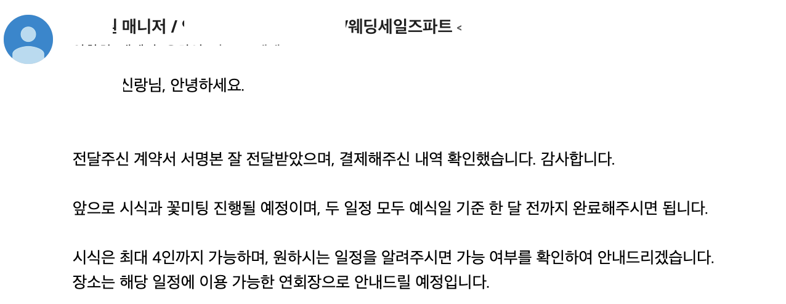

개붕이 결혼하기로 했다
식장 알아보고 계약하고 옴
너네도 행복하렴

개붕이 결혼하기로 했다
식장 알아보고 계약하고 옴
너네도 행복하렴
개붕쟝 식에 돈좀 썻구나
역시 고급 글카 오우너는 다르구나
와 4090에 결혼까지 부럽다..
가면 답례품으로 1t ssd하나씩 주냐
화이팅 이제 진짜인생 시작이네

행복해라...
부럽다
이야 축하나 받으라
축하한다. 애국까지 달리자
축하해! 근데 시식 보통 6명 잡지 않아? 왜 4명이지..
우리도 4명이어서 엄마 장모님 데꼬갔는데
보통 6명임?
보통은 양가 부모 당사자들 해서 6명이니까? 당시 요즘은 시식 겸 상견례를 같이 해서 기본 6이고 추가(형제들)까지 된다고 실장님이 설명해주셨음. 나는 6이었고 동생 결혼할 땐 나까지 일곱이 상견례 겸 시식 했거든. 물론 호텔이라 그랬을 수도 있어...
시불 우린 그냥 적당한 웨딩홀에서 해서 4명줬나
생각해보니 그러넹 ㅋㅋ
그리구 결혼식 하객은 결국 부모님 손님들이니까. 겹칠수도 있지만 어머니만 아는 손님, 아버지만 아는 손님이 따로 있잖아? 부모님 손님들이니 부모님들도 당사자고 한번 맛보는 게 맞다고 생각했었음.
아직 늦지않았어 도망쳐!!
다섯쌍둥이 기원
축하한다 근데 답례품으로 승희바보고라파덕 뿌린다는게 사실이냐
결혼 준비중에 많이 싸울 수 있다.
결혼 하고 나서도 싸울 수 있다.
그래도 이야기 하고 잘 풀어라. 싸우는게 중요한게 아니고 잘 푸는게 중여한거애
그럼에도 혹시 신혼여행패키지로 간다면, 뭐 산다고하면 뜯어말려라
결혼이 끝이 아니라 시작이다 꼭 명심해라
결론 축하한다
33렙이 어떻게?!?!?!?!?
상대도 개붕이인가!
넥슨은 청첩장을 뿌려라
축하한다
축하행 후기올려줭
축하해 나 햄부기 하나만
와퍼세트 보냈다 쪽지함 확인해봐 🍔

서로 자존심 굽히고 말 한마디 하기 전에 상대방 입장 한번 생각하고 이야기 하면 좋다. 잘 살아라 이쁜 애기들 낳고 행복하게
축하해!!
축하한다. 행복한 가족이 되기를!
여기가니일기장이냐결혼축하한다.
축하한다. 싸우지말고 얼른 해치워